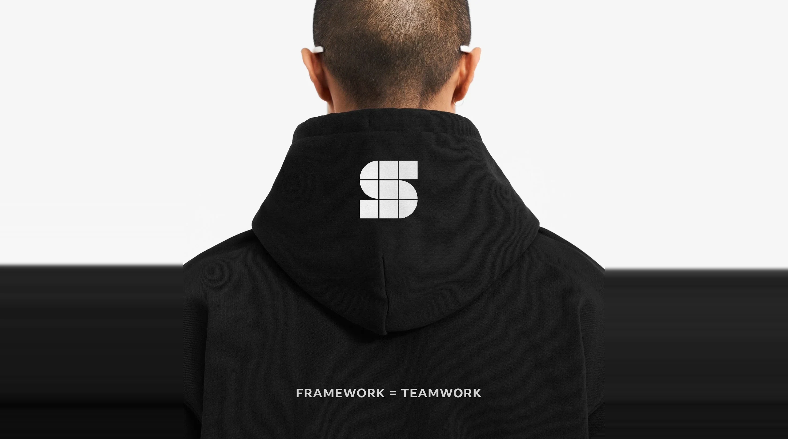

Case Study · Facebook · Studio
Studio Model

01 — Overview
Studio Model emerged from Facebook Design's need to address a disjointed system where teams overlapped across experiences without a unified view of the app. Its mission was to design Facebook as one team, aligning app-wide priorities around a cohesive, user-centric approach.
Studio comprised 8 Pods, each focused on a specific facet of the app, with 50+ product designers across the team.
I led the development of Studio's brand, translating its philosophy into a visual identity that unified the Pods and rallied the broader design organization around a shared way of working.
02 — Presentation